.

金农咨询服务中心平台软件
操作手册
|
文件状态： [√] 草稿 [
] 正式发布 [ ] 正在修改 |
文件标识： |
ET-Project-Menu-sdh1 |
|
当前版本： |
1.0 |
|
|
文件级别： |
|
|
|
作 者： |
|
|
|
完成日期： |
|
沈阳卓越科技有限公司
.
金农咨询服务中心平台软件
操作手册
|
文件状态： [√] 草稿 [
] 正式发布 [ ] 正在修改 |
文件标识： |
ET-Project-Menu-sdh1 |
|
当前版本： |
1.0 |
|
|
文件级别： |
|
|
|
作 者： |
|
|
|
完成日期： |
|
沈阳卓越科技有限公司
版本历史
|
版本/状态 |
作者 |
参与者 |
起止日期 |
备注 |
|
1.0 |
王文权 |
|
2008-10-30 |
|
|
|
|
|
|
|
|
|
|
|
|
|
|
|
|
|
|
|
文档说明
|
沈阳卓越科技有限公司 2008版 |
登录成功，进入操作页面
座席业务操作栏 分为 1金农典型案例管理系统 2供求价格信息管理系统 3金农信息产品编发系统 4企业服务信息管理系统 5医疗服务信息管理系统 6专题调查信息分析系统 7语音信箱内容管理系统 8热线服务信息统计系统 9短信收发管理系统 10客户端内容维护系统 11其他业务管理 12系统管理 13日志管理14 超级管理员使用节点 15 用户管理 16联络员管理系统
普通案例记录的就是一般话务员记录的案例信息。
完整的普通案例信息包括：受理工号、受理专家、受理时间（系统时间）、用户姓名、用户电话、用户地址、审核状态（原始、待审、已审、发布）、案例属性（大类、小类、种类）、咨询内容、热线答复、案例点评、相关图片、备注等。

右面显示：


（图1.1）
点击（图1.1）中的查询按钮，进行查询，下方将显示查询出来的信息列表。
点击（图1.1）中的反选按钮, “选择”使用的复选框将全部选中, 再点击一次将全部取消。
点击（图1.1）中的导出按钮,将根据所选择的格式将显示的数据导出到相关的文档之中。
点击（图1.1）中的打印按钮,将所显示的数据以表格形式显示在新的页面中，然后使用页面打印功能将其打印出来。
点击（图1.1）中的详细，修改，删除按钮弹出大致相同的页面；
唯一不同的是按钮的类型。例如你点击详细按钮，弹出来的页面上只有关闭按钮。点击修改按钮，弹出来的页面上会有确定和关闭两个按钮。点击删除按钮，弹出来的页面上会有删除和关闭按钮。
点击（图1.1）中的添加按钮，弹出添加操作页面
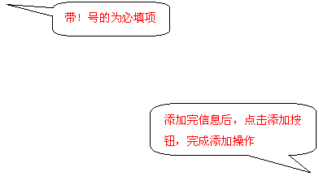
点击（图1.1）中的统计按钮，弹出统计选择方式页面。
不选择受理工号，显示界面：
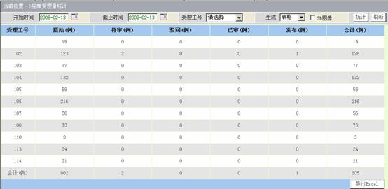
选择受理工号，显示界面：

不选择受理工号和案例种类，界面显示：
选择受理工号和案例种类，界面显示：
不选择受理专家，界面显示：
选择受理专家，界面显示：
焦点案例记录的是具有广泛性的信息，比如大面积发生的疫情灾情信息等。
完整的焦点案例信息包括：受理工号、受理专家、受理时间（系统时间）、用户姓名、用户电话、用户地址、审核状态（原始、待审、已审、发布）、案例属性（疫情灾害、政策纠风、市场经济、生产管理、医疗卫生、食品安全、文娱教育等）、热线调查、咨询内容、热线答复、案例点评、相关图片、备注等。
右面显示：

 （图1.2）
（图1.2）
点击（图1.2）中的查询按钮，进行查询，下方将显示查询出来的信息列表。
点击（图1.2）中的反选按钮, “选择”使用的复选框将全部选中, 再点击一次将全部取消。
点击（图1.2）中的导出按钮,将根据所选择的格式将显示的数据导出到相关的文档之中。
点击（图1.2）中的打印按钮,将所显示的数据以表格形式显示在新的页面中，然后使用页面打印功能将其打印出来。
点击（图1.2）中的详细，修改，删除按钮弹出大致相同的页面；
唯一不同的是按钮的类型。例如你点击详细按钮，弹出来的页面上只有关闭按钮。点击修改按钮，弹出来的页面上会有确定和关闭两个按钮。点击删除按钮，弹出来的页面上会有删除和关闭按钮。
点击（图1.2）中的添加按钮，弹出添加操作页面
点击（图1.2）中的统计按钮，弹出统计选择方式页面。
点击统计按钮才能显示查询列表信息

点击统计按钮才能显示查询列表信息
不选择座席工号，显示界面：
选择座席工号，显示界面：
点击统计按钮才能显示查询列表信息
不选择座席工号、案例属性，显示界面：
选择座席工号、案例属性，显示界面：
会诊案例记录的一些防止病虫害的信息。
完整的会诊案例信息包括：受理工号、受理专家、受理时间、会诊时间、用户姓名、用户电话、用户地址、审核状态（原始、待审、已审、发布），会诊人员、会诊主题、会诊内容、案例属性（大类、小类、种类）、案例点评、相关报道、相关图片、备注等。
右面显示：

 （图1.3）
（图1.3）
点击（图1.3）中的查询按钮，进行查询，下方将显示查询出来的信息列表。
点击（图1.3）中的反选按钮, “选择”使用的复选框将全部选中, 再点击一次将全部取消。
点击（图1.3）中的导出按钮,将根据所选择的格式将显示的数据导出到相关的文档之中。
点击（图1.3）中的打印按钮,将所显示的数据以表格形式显示在新的页面中，然后使用页面打印功能将其打印出来。
点击（图1.3）中的详细，修改，删除按钮弹出大致相同的页面；
唯一不同的是按钮的类型。例如你点击详细按钮，弹出来的页面上只有关闭按钮。点击修改按钮，弹出来的页面上会有确定和关闭两个按钮。点击删除按钮，弹出来的页面上会有删除和关闭按钮。
点击（图1.3）中的添加按钮，弹出添加操作页面
点击（图1.3）中的统计按钮，弹出统计选择方式页面。
点击统计按钮才能显示查询列表信息
不选择受理工号，显示界面：
选择受理工号，显示界面：
不选择受理工号，显示界面：
 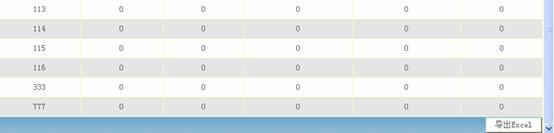
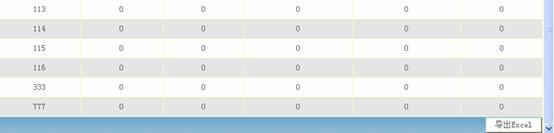
选择受理工号，显示界面：
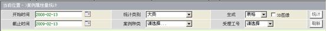
击统计按钮才能显示查询列表信息
不选择受理工号、案例种类，显示界面：

选择受理工号、案例种类，显示界面：
点击统计按钮才能显示查询列表信息
不选择受理专家，显示界面：
选择受理专家，显示界面：
效果案例记录的信息为一些已经处理信息的反馈信息。
完整的效果案例信息包括：受理工号、受理专家（全部填金农热线）、受理时间（系统时间）、用户姓名、用户电话、用户地址、审核状态（原始、待审、已审、发布）、案例属性（用户建议、用户评价、服务成效）、咨询内容、热线答复、相关报道、相关图片、备注等。
右面显示：
 （图1.4）
（图1.4）

点击（图1.4）中的查询按钮，进行查询，下方将显示查询出来的信息列表。
点击（图1.4）中的反选按钮, “选择”使用的复选框将全部选中, 再点击一次将全部取消。
点击（图1.4）中的导出按钮,将根据所选择的格式将显示的数据导出到相关的文档之中。
点击（图1.4）中的打印按钮,将所显示的数据以表格形式显示在新的页面中，然后使用页面打印功能将其打印出来。
点击（图1.4）中的详细，修改，删除按钮弹出大致相同的页面；
唯一不同的是按钮的类型。例如你点击详细按钮，弹出来的页面上只有关闭按钮。点击修改按钮，弹出来的页面上会有确定和关闭两个按钮。点击删除按钮，弹出来的页面上会有删除和关闭按钮。
点击（图1.4）中的添加按钮，弹出添加操作页面
点击（图1.4）中的统计按钮，弹出统计选择方式页面。
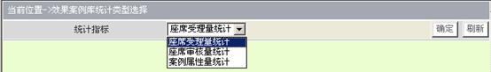
点击统计按钮才能显示查询列表信息
不选择座席工号，显示界面：
选择座席工号，显示界面：
点击统计按钮才能显示查询列表信息
不选择受理工号显示界面：
点击统计按钮才能显示查询列表信息
不选择受理工号、案例属性，显示界面：
选择受理工号、案例属性，显示界面：
记录用户的农产品供求信息，并且在用户发布供求信息后，尽可能快的在供求库中为用户找到相应的信息，通知用户，保证用户在第一时间得到供求信息。
完整的农产品供求信息包括：受理工号、受理时间（系统时间）、开始时间、截止时间、联系人、联系电话、联系地址、邮编、审核状态（原始、待审、已审、发布）、供求类型（预供、预求、现供、现求）、产品名称、产品规格、产品数量、相关图片、备注等。
右面显示：

 （图2.1）
（图2.1）
点击（图2.1）中的查询按钮，进行查询，下方将显示查询出来的信息列表。
点击（图2.1）中的反选按钮, “选择”使用的复选框将全部选中, 再点击一次将全部取消。
点击（图2.1）中的导出按钮,将根据所选择的格式将显示的数据导出到相关的文档之中。
点击（图2.1）中的打印按钮,将所显示的数据以表格形式显示在新的页面中，然后使用页面打印功能将其打印出来。
点击（图2.1）中的详细，修改，删除按钮弹出大致相同的页面；
唯一不同的是按钮的类型。例如你点击详细按钮，弹出来的页面上只有关闭按钮。点击修改按钮，弹出来的页面上会有确定和关闭两个按钮。点击删除按钮，弹出来的页面上会有删除和关闭按钮。
点击（图2.1）中的添加按钮，弹出添加操作页面

点击（图1.2）中的统计按钮，弹出统计选择方式页面。
点击统计按钮才能显示查询列表信息
不选择座席工号，显示界面：
选择座席工号，显示界面：
点击统计按钮才能显示查询列表信息
不选择座席工号，显示界面：
选择座席工号，显示界面：
点击统计按钮才能显示查询列表信息
不选择座席工号，显示界面：
选择座席工号，显示界面：
点击统计按钮才能显示查询列表信息
不填写产品名称，显示界面。
填写产品名称，显示界面。
记录当前农产品的价格信息，主要是由金农固定联络员定期报价，由坐席员录入，其格式是在前面介绍的价格格式。可以对价格信息进行维护。
完整的农产品价格信息包括：受理工号、受理专家（全部填金农热线）、受理时间（系统时间）、用户姓名、用户电话、用户地址、修改状态（原始、待审、已审、发布）、价格类型（收购价、批发价、零售价）、产品名称、产品规格、价格、价格单位、发布时间、备注等。
右面显示：
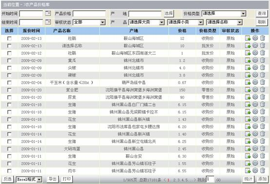
 （图2.2）
（图2.2）
点击（图2.2）中的查询按钮，进行查询，下方将显示查询出来的信息列表。
点击（图2.2）中的反选按钮, “选择”使用的复选框将全部选中, 再点击一次将全部取消。
点击（图2.2）中的导出按钮,将根据所选择的格式将显示的数据导出到相关的文档之中。
点击（图2.2）中的打印按钮,将所显示的数据以表格形式显示在新的页面中，然后使用页面打印功能将其打印出来。
点击（图2.2）中的详细，修改，删除按钮弹出大致相同的页面；
唯一不同的是按钮的类型。例如你点击详细按钮，弹出来的页面上只有关闭按钮。点击修改按钮，弹出来的页面上会有修改和关闭两个按钮。点击删除按钮，弹出来的页面上会有删除和关闭按钮。
点击（图2.2）中的添加按钮，弹出添加操作页面,进行批量添加数据。
点击（图2.2）中的统计按钮，弹出统计选择方式页面。
点击统计按钮才能显示查询列表信息
不选择受理工号，显示界面。
选择受理工号，显示界面。

点击统计按钮才能显示查询列表信息
不选择产品大类、产品小类、产品名称，显示界面。
选择产品大类、产品小类、产品名称，显示界面。
点击统计按钮才能显示查询列表信息
显示界面。
2.2.2.4. 产地产品最值/均值统计
点击统计按钮才能显示查询列表信息；
不选择产品大类，地址显示界面：
选择产品大类，地址显示界面：
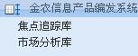
焦点追踪主要记录一些关注性问题的相关报道。分为市场版和实事版两种类型，业务模块提供增，删，改，查功能。
完整《焦点追踪》的信息结构包括：主办、承办、期第、版别（市场版、实事版）、出刊日期、报送单位、品种、主编、副主编、首席编辑、责任编辑、支持热线、支持网站、联络邮箱、产品标识、主标题、副标题、摘要、正文、领导批示、修改建议（一审建议、二审建议、三申建议）、审核状态（初稿、一审稿、二审稿、三审稿、发布稿）、用户评论等。
右面显示：

（图3.1）
点击（图3.1）中的查询按钮，进行查询，下方将显示查询出来的信息列表。
点击（图3.1）中的反选按钮, “选择”使用的复选框将全部选中, 再点击一次将全部取消。
点击（图3.1）中的导出按钮,将根据所选择的格式将显示的数据导出到相关的文档之中。
点击（图3.1）中的打印按钮,将所显示的数据以表格形式显示在新的页面中，然后使用页面打印功能将其打印出来。
点击（图3.1）中的详细，修改，删除按钮弹出大致相同的页面；
唯一不同的是按钮的类型。例如你点击详细按钮，弹出来的页面上只有关闭按钮。点击修改按钮，弹出来的页面上会有确定和关闭两个按钮。点击删除按钮，弹出来的页面上会有删除和关闭按钮。
点击（图3.1）中的添加按钮，弹出添加操作页面,
点击（图3.1）中的统计按钮，弹出统计选择方式页面。
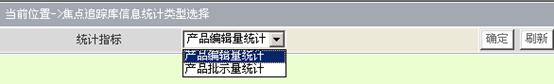
点击统计按钮才能显示查询列表信息
不选择责任编辑，界面显示：
选择责任编辑，界面显示：
点击统计按钮才能显示查询列表信息
不填写责任编辑，界面显示。

填写责任编辑，界面显示。

金农市场分析主要分析其六类产品的日常情况，六类产品为：生猪、牛羊、禽蛋、玉米、水稻、大豆，并按照周，月，季，年进行定期的市场分析，并将分析结果发布出来，此模块主要提供，增，删，改，查功能。
完整《金农市场分析》的信息结构包括：主办、承办、期数、品种（有生猪、牛羊、禽蛋、玉米、水稻、大豆等）、评别（有周评、月评、季评、年评）、出刊日期、报送单位、主编、副主编、首席编辑、责任编辑、支持热线、支持网站、联络邮箱、产品标识、主标题、副标题、摘要、正文、修改建议（一审建议、二审建议、三申建议）、修改状态（初稿、一审稿、二审稿、三审稿、发布稿）、用户评论等。
右面显示：

（图3.2）
点击（图3.2）中的查询按钮，进行查询，下方将显示查询出来的信息列表。
点击（图3.2）中的反选按钮, “选择”使用的复选框将全部选中, 再点击一次将全部取消。
点击（图3.2）中的导出按钮,将根据所选择的格式将显示的数据导出到相关的文档之中。
点击（图3.2）中的打印按钮,将所显示的数据以表格形式显示在新的页面中，然后使用页面打印功能将其打印出来。
点击（图3.2）中的详细，修改，删除按钮弹出大致相同的页面；
唯一不同的是按钮的类型。例如你点击详细按钮，弹出来的页面上只有关闭按钮。点击修改按钮，弹出来的页面上会有修改和关闭两个按钮。点击删除按钮，弹出来的页面上会有删除和关闭按钮。
点击（图3.2）中的添加按钮，弹出添加操作页面,
点击（图.32）中的统计按钮，弹出统计选择方式页面。

点击统计按钮才能显示查询列表信息
不选择责任编辑，显示界面：
选择责任编辑，显示界面：
点击统计按钮才能显示查询列表信息
不选择品种，显示界面：
选择品种，显示界面：
企业服务信息就是针对企业类型用户的服务记录信息。完整的企业服务信息包括：受理工号、受理专家、受理时间（系统时间）、用户姓名、用户电话、用户地址、修改状态（原始、待审、已审、发布）、服务类型（产品推介、售后服务、电话调查、信箱广告、产品销售）、咨询内容、热线答复、相关备注等。系统能够完成对企业服务信息的维护操作。
右面显示：

（图4.1）
点击（图4.1）中的查询按钮，进行查询，下方将显示查询出来的信息列表。
点击（图4.1）中的反选按钮, “选择”使用的复选框将全部选中, 再点击一次将全部取消。
点击（图4.1）中的导出按钮,将根据所选择的格式将显示的数据导出到相关的文档之中。
点击（图4.1）中的详细，修改，删除按钮弹出大致相同的页面；
唯一不同的是按钮的类型。例如你点击详细按钮，弹出来的页面上只有关闭按钮。点击修改按钮，弹出来的页面上会有修改和关闭两个按钮。点击删除按钮，弹出来的页面上会有删除和关闭按钮。
点击（图4.1）中的添加按钮，弹出添加操作页面,

点击（图4.1）中的统计按钮，弹出统计选择方式页面。
点击统计按钮才能显示查询列表信息
不选择受理工号，显示界面：
选择受理工号，显示界面：
点击统计按钮才能显示查询列表信息
不选择受理工号，显示界面：
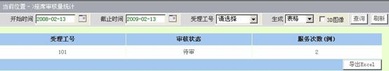

选择受理工号，显示界面：
点击统计按钮才能显示查询列表信息
不选择受理工号，显示界面。
选择受理工号，显示界面。
普通医疗服务信息库主要记录的是农民关于医疗信息的咨询内容。
完整的普通医疗服务信息记录应该包括：受理工号、受理专家（为医院专家）、受理时间（系统时间）、用户姓名、用户性别、用户电话、用户地址、审核状态（原始、待审、已审）、受否参加新农合（是、否）、咨询内容、热线答复、跟踪服务、备注。系统能够完成对普通医疗服务信息的维护操作
右面显示：
（图5.1）
点击（图5.1）中的查询按钮，进行查询，下方将显示查询出来的信息列表。
点击（图5.1）中的反选按钮, “选择”使用的复选框将全部选中, 再点击一次将全部取消。
点击（图5.1）中的导出按钮,将根据所选择的格式将显示的数据导出到相关的文档之中。
点击（图5.1）中的详细，修改，删除按钮弹出大致相同的页面；
唯一不同的是按钮的类型。例如你点击详细按钮，弹出来的页面上只有关闭按钮。点击修改按钮，弹出来的页面上会有确定和关闭两个按钮。点击删除按钮，弹出来的页面上会有删除和关闭按钮。
点击（图5.1）中的添加按钮，弹出添加操作页面
点击（图5.1）中的统计按钮，弹出统计选择方式页面。
点击统计按钮才能显示查询列表信息
不选择受理工号，显示界面：
选择受理工号，显示界面：
点击统计按钮才能显示查询列表信息
不选择专家，显示界面：
选择专家，显示界面：
点击统计按钮才能显示查询列表信息
不选择受理工号，显示界面：
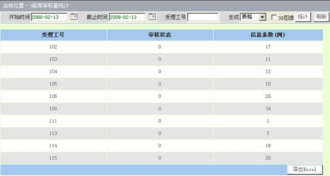
选择受理工号，显示界面：

点击统计按钮才能显示查询列表信息

点击统计按钮才能显示查询列表信息
不填写用户姓名，显示界面：

填写用户姓名，显示界面：
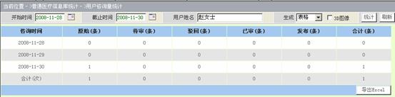

预约医疗服务信息库主要记录的是农民在需要到医院就诊、住院的信息。完整的普通医疗服务信息包括：受理工号、受理专家（为医院专家）、受理时间（系统时间）、用户姓名、用户性别、用户电话、用户地址、修改状态（原始、待审、已审、发布）、受否参加新农合（是、否）、咨询内容、热线答复、服务类型（就诊预约、住院预约）、受否就诊（是、否）、就诊时间(此处改为预约就诊时间和实际就诊时间)（用时间选择器）、医院审核意见（手动输入）、导诊员（下拉选择）、床位（下拉选择）、就诊项目及费用（列表选择）、总计费用（录入），优惠政策（可多选）、就医结果（手动录入）、跟踪服务、备注等。系统能够完成对预约医疗服务信息的维护操作。

右面显示：


（图5.2）
点击（图5.2）中的查询按钮，进行查询，下方将显示查询出来的信息列表。
点击（图5.2）中的反选按钮, “选择”使用的复选框将全部选中, 再点击一次将全部取消。
点击（图5.2）中的导出按钮,将根据所选择的格式将显示的数据导出到相关的文档之中。
点击（图5.2）中的详细，修改，删除按钮弹出大致相同的页面；
唯一不同的是按钮的类型。例如你点击详细按钮，弹出来的页面上只有关闭按钮。点击修改按钮，弹出来的页面上会有确定和关闭两个按钮。点击删除按钮，弹出来的页面上会有删除和关闭按钮。
点击（图5.2）中的添加按钮，弹出添加操作页面
点击（图5.2）中的统计按钮，弹出统计选择方式页面。
点击统计按钮才能显示查询列表信息
不选择受理工号，显示界面：
选择受理工号，显示界面：
点击统计按钮才能显示查询列表信息
不选择专家，显示界面：
选择专家，显示界面：
点击统计按钮才能显示查询列表信息
不选择受理工号，显示界面：
选择受理工号，显示界面：
点击统计按钮才能显示查询列表信息
点击统计按钮才能显示查询列表信息
不填写用户姓名，显示界面：
填写用户姓名，显示界面：

点击统计按钮才能显示查询列表信息
不填写受理专家，显示界面：
填写受理专家，显示界面：
点击统计按钮才能显示查询列表信息
不填写受理专家，不选择受理工号显示界面：
填写受理专家，选择受理工号显示界面：

点击统计按钮才能显示查询列表信息
显示界面：
当用户来电参加调查时，对应的调查格式就是这里生成的调查信息。调查信息包括：调查类别（分为：疫情灾害、涉农政策、市场经济、生产管理、医疗卫生、食品安全、文娱教育、热线服务）、问卷主题、发起机构、调查目的、调查时间（时间段）、组织者（可多项选择）、参与人员（可多项选择）、调查详情（即本次调查的内容（主要包括一系列的问题和每个问题对应的备选答案等信息））
右边显示


（图6.1）
点击（图6.1）中的查询按钮，进行查询，下方将显示查询出来的信息列表。
点击（图6.1）中的反选按钮, “选择”使用的复选框将全部选中, 再点击一次将全部取消。
点击（图6.1）中的导出按钮,将根据所选择的格式将显示的数据导出到相关的文档之中。
点击（图6.1）中的打印按钮,将所显示的数据以表格形式显示在新的页面中，然后使用页面打印功能将其打印出来。
点击（图6.1）中的详细，修改，删除按钮弹出大致相同的页面；
唯一不同的是按钮的类型。例如你点击详细按钮，弹出来的页面上只有关闭按钮。点击修改按钮，弹出来的页面上会有修改和关闭两个按钮。点击删除按钮，弹出来的页面上会有删除和关闭按钮。
点击（图6.1）中的添加按钮，弹出添加操作页面

点击（图6.1）中的统计按钮，弹出统计选择方式页面。


点击统计按钮才能显示查询列表信息
不选择调查类别，界面显示。
选择调查类别，界面显示。
点击统计按钮才能显示查询列表信息
不选择发起机构，界面显示。
.
选择发起机构，界面显示。
2.6.1.3. 组织调查量统计
点击统计按钮才能显示查询列表信息
不填写组织者，界面显示。
填写组织者，界面显示。
在结果查询中选定已经完成的调查主题（但是还没形成调查报告）的记录，根据查询的参与结果形成调查分析报告并保存。调查报告的完整信息包括：标题、副标题、调查主题、撰稿人、关键字、摘要、调查时间、调查样本、调查有效率、调查组织者、调查人员、调查发起机构、报告正文、报告评论、备注。
右面显示：
（图6.2）
点击（图6.2）中的查询按钮，进行查询，下方将显示查询出来的信息列表。
点击（图6.2）中的反选按钮, “选择”使用的复选框将全部选中, 再点击一次将全部取消。
点击（图6.2）中的导出按钮,将根据所选择的格式将显示的数据导出到相关的文档之中。
点击（图6.2）中的打印按钮,将所显示的数据以表格形式显示在新的页面中，然后使用页面打印功能将其打印出来。
点击（图6.2）中的详情按钮，弹出详情页面；点击查询按钮，显示相关信息。
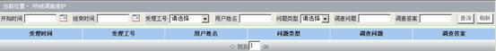
点击（图6.2）中的报告按钮，弹出报告页面；如果报告有内容，显示删除按钮，如果报告无内容，则不显示删除按钮；点击删除按钮将清空报告内容，点击确定按钮将进行更新；点击关闭按钮将关闭当前页面。
点击（图6.2）中的结果按钮，弹出相关结果页面。
点击（图3.1）中的统计按钮，弹出统计选择方式页面。
点击统计按钮才能显示查询列表信息
显示界面：
点击统计按钮才能显示查询列表信息
显示界面：
用于存储和修改各种录制好的语音信息，并将其规定到指定的节点。
右面显示：
（图7.1）
点击（图7.1）中的查询按钮，进行查询，下方将显示查询出来的信息列表。
点击（图7.1）中的反选按钮, “选择”使用的复选框将全部选中, 再点击一次将全部取消。
点击（图7.1）中的文本添加1按钮，将语音路径导入到栏目节点中。
点击（图7.1）中的文本添加2按钮，将播放内容导入到栏目节点中。
点击（图7.1）中的详细，修改，删除按钮弹出大致相同的页面；
唯一不同的是按钮的类型。例如你点击详细按钮，弹出来的页面上只有关闭按钮。点击修改按钮，弹出来的页面上会有修改和关闭两个按钮。点击删除按钮，弹出来的页面上会有删除和关闭按钮。
进行定制语音信息或点播语音信息在指定时间播放。
右面显示：

（图7.2）
选择（图7.2）定制类型选项，选择不同的定制类型，添加按钮随着变更为相关按钮（转变成点播按钮和定制按钮）。
点击（图7.2）添加按钮或定制按钮，进行定制栏目信息。
点击（图7.2）点播按钮，进行点播栏目信息，在指定时间自动播放。
点击（图7.2）查询按钮，显示信息。
在设置完必要的统计条件后，点击统计按钮，在此界面的下方会显示统计结果
如图(8.2)所示，点击刷新按钮则清空统计条件。
图(8.2)
点击统计按钮，此界面下方会显示统计信息。
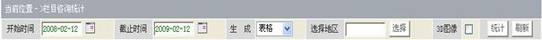
点击刷新按钮可清空统计条件， 点击选择按钮后，弹出选择地区窗口，选择主叫方所在市、县等信息。如图(8.3)
图(8.3)
点击选择按钮完成选择地区操作，此后会返回统计界面，点击统计按钮生成统计信息，如下图
设置完开始和截止时间、统计指标、选择地区(操作同8.3的选择地区)后，点击统计按钮，在此界面下方会出现统计信息，同样也可以把统计信息保存成Excel表格。统计信息如下图
设置完开始和截止时间、统计指标、生成方式后，点击统计按钮，在上图界面下方会出现统计信息，同样也可以把统计信息保存成Excel表格。
点击刷新按钮清空统计条件，以便重新设置统计条件。
统计信息如下图
设置完开始和截止时间、生成方式后，点击统计按钮，在上图界面下方会出现统计信息，同样也可以把统计信息保存成Excel表格。
点击刷新按钮清空统计条件，以便重新设置统计条件。
统计信息如图（8.4.2）
图（8.4.2）
设置外呼号码时，可以输入精确的号码 如：13102412315，也可以输入号段或不完整的号码，如：0131号段 或者 0131024 系统会进行模糊查询，找出所有0131号段或者号码前7位是0131024的外呼号码的外呼时长，并按所设置的统计单价计算外呼费用。
设置完统计开始和截止时间、外呼号码和统计单价后，点击统计按钮，会在上图界面的下方出现统计信息。
点击刷新按钮清空统计条件，以便重新设置统计条件。
也可以把统计信息保存为Excel表格。
统计信息如下图
把统计单价设置为0.2的时候，输出如下图所示的统计信息。
把统计单价设置为0.1的时候，输出如下图所示的统计信息。
注意两次外呼计费栏统计费用的变化
按上图设置完统计条件后，点击统计按钮会在上图界面的下方出现统计信息。
点击刷新按钮清空统计条件，以便重新设置统计条件。
也可以把统计信息保存为Excel表格。

电话号码必须输入，可以是精确的号码 如：13102412315，也可以输入号段或不完整的号码，如：0131号段 或者 0131024 系统会进行模糊查询，找出所有0131号段或者号码前7位是0131024的外呼号码的信息。
当上图所需统计条件设置完毕后，点击统计按钮，会在上图界面的下方出现统计信息。
点击刷新按钮会清空统计条件，以便重新输入统计条件。
统计结果如下图所示
按上图设置具体统计条件，若不选择座席工号，则统计所有座席的评价，若选择了具体座席工号，则统计其个人的评价。结果均可保存成Excel表格
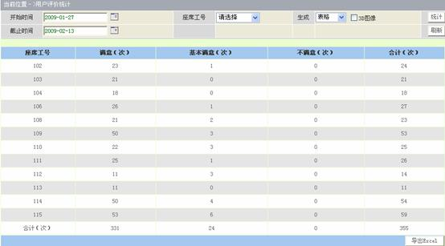
右面显示：

（图9.1）
点击（图9.1）中的发送按钮，可发送信息给制定客户。
点击（图9.1）中的保存按钮, 可将短信保存到制定地点。
右面显示：
（图9.2）
此功能可对收到的信息进行查看，删除。
右面显示：
（图9.3）
点击（图9.3）中的点播按钮，可对您输入的手机号码发送您点播的短信
右面显示：
（图9.4）
点击（图9.4）中的定时按钮，可为您栏目定时发出短信。
点击（图9.4）中的修改按钮，可为您的栏目名称。

点击上图的修改按钮，界面显示。
右面显示：
（图9.4）
点击（图9.4）中的详细按钮，可查看短信详细信息。
此功能查看短信详细信息，修改短信，删除短信。
该界面能进行以下操作：
点击查询按钮，会按照具体设置的查询条件，执行查询操作
点击刷新按钮，会清空查询条件，以便重新输入
点击查看按钮，会弹出下面窗体
只能查看公告标题和内容，点击关闭按钮关闭该窗体
点击修改按钮，会弹出下面的窗体
可以对标题和内容进行修改，点击修改按钮执行修改，点击关闭按钮，不进行修改。
点击删除按钮，弹出下面的窗体
点击删除按钮弹出下面的确认框，点击确定则删除该条信息，点击取消则不删除。
点击图（10.1）的添加按钮弹出下面窗体，在窗体中输入标题和内容，并点击下图中的添加按钮完成添加操作
操作界面如下图
上图界面能进行的操作有：
点击刷新按钮可清空查询条件
点击查询按钮生成如下图所示的查询结果
在图（10.2.1）的界面可以进行的操作有：
点击查看按钮，查看该条信息的具体内容
点击图（10.2.1）的修改按钮，进入下图所示的修改界面，填写要修改的信息并点击下图中的修改按钮完成修改
点击图（10.2.1）的删除按钮删除当前信息
点击反选按钮，会使用原来处于选中状态的复选框取消选中并使原来未选中的复选框被选中
例如，点击反选按钮前的复选框选中状态如下图所示

点击反选按钮后的复选框选中状态如下图所示
点击图（10.2.1）的导出按钮可以把查询结果保存为Excel表格
点击图（10.2.1）的打印按钮可以把查询结果打印出来
点击图（10.2.1）的添加按钮弹出如下界面, 输入信息后点击保存按钮完成添加操作
点击图（10.2.1）的统计按钮弹出如下窗口
选择要统计的指标，点击确定按钮弹出如下统计窗口，设置具体的统计条件。
在按需要设置完毕统计条件后点击统计按钮，查看统计结果。可保存为Excel表格。
点击刷新按钮可清空统计条件。
统计结果显示如下图
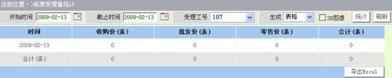
操作界面如下图
按需要在分析类别、分析标题、分析员栏内输入要查询的条件，点击查询按钮，出现如下查询结果界面
也可点击刷新按钮清空查询条件。
在图（2.10.3）的界面上可做如下操作：
点击查看按钮可查看该条信息详细情况
点击修改按钮可修改该条信息
点击删除按钮则删除该条信息
点击导出word文件按钮则可以把信息保存在word文件中
点击图（2.10.3）的添加按钮弹出如下窗口，输入实际信息后，点击下图中的添加按钮完成添加操作
操作界面如下图

按需要设置完查询条件，点击查询按钮，出现如下查询结果界面。也可点击刷新按钮清空查询条件。
图(10.4)
在图(10.4)的界面可做如下操作：
点击查看按钮可查看该条信息详细情况
点击图(10.4)的修改按钮弹出界面如下图，根据需要修改信息，若有图片，点击浏览按钮选择图片所在路径，点击修改按钮完成操作。
点击图(10.4)的删除按钮则删除该条信息
点击图(10.4)的反选按钮，会使用原来处于选中状态的复选框取消选中并使原来未选中的复选框被选中。
点击图(10.4)的导出按钮，并选择按钮右边的导出文件格式 如：Excel则可以把信息保存在对应格式的文件中
选中要打印信息前边的复选框，点击打印按钮执行打印操作
点击添加按钮，弹出添加供求信息窗口
在上图窗口中输入必要信息；若有图片，点击浏览按钮选择图片文件所在位置；联系地址要点击选择按钮设置；输入完毕点击添加按钮完成操作。
点击图（10.4）的统计按钮，弹出如下窗口
选择好统计指标后点击确定按钮,弹出下面的统计窗体
按需要设置完毕统计条件，点击统计按钮显示统计信息。也可将统计信息保存成Excel表格。
操作界面如下图
按需要设置完查询条件，点击查询按钮，出现如下查询结果界面。也可点击刷新按钮清空查询条件。
在图（10.5）的界面可做如下操作：
点击查看按钮可查看该条信息详细情况
点击修改按钮弹出界面如下图，修改后点击修改按钮完成操作。
点击图（10.5）的删除按钮则删除该条信息
点击图（10.5）的反选按钮，会使用原来处于选中状态的复选框取消选中并使原来未选中的复选框被选中。
点击图（10.5）的导出按钮，并选择按钮右边的导出文件格式 如：word、Excel,则可以把信息保存在对应格式的文件中
选中图（10.5）的要打印信息前边的复选框，点击打印按钮执行打印操作
点击图（10.5）的添加按钮，弹出添加信息窗口
在上图窗口中输入必要信息；若有图片，点击浏览按钮选择图片文件所在位置；用户地址要点击选择按钮设置；输入完毕点击添加按钮完成操作。
点击图(10.5)的统计按钮，弹出如下窗口
选择好统计指标后点击确定按钮,弹出下面的统计窗体

按需要设置完毕统计条件，点击统计按钮显示统计信息。也可将统计信息保存成Excel表格。
操作界面如下图
按需要设置完查询条件，点击查询按钮，出现如下查询结果界面。也可点击刷新按钮清空查询条件。
在图(10.6)的界面可做如下操作：
点击查看按钮可查看该条信息详细情况
点击修改按钮弹出界面如下图，修改后点击下图的修改按钮完成操作。
点击删除按钮则删除该条信息
点击图(10.6)的添加按钮，弹出添加信息窗口
在上图窗口中输入必要信息；若有图片，点击浏览按钮选择图片文件所在位置；用户地址要点击选择按钮设置；输入完毕点击添加按钮完成操作。
操作界面如下图
按需要设置完查询条件，点击查询按钮，出现如下查询结果界面。也可点击刷新按钮清空查询条件。
图（10.7）
在此查询结果界面可做如下操作：
点击查看按钮可查看专家详细信息
点击修改按钮弹出界面如下图，修改专家信息
若要更改专家照片，点击浏览按钮，选择照片文件所在位置（上图专家照片仅做为例子说明修改照片操作，别无他意，敬请见谅），点击修改按钮完成操作。
点击图（10.7）的删除按钮，在弹出的窗口中点击删除按钮。
点击图（10.7）的添加按钮，弹出添加专家信息窗口
输入必要信息后，若有照片，点击浏览按钮选择专家照片文件所在位置，点击添加按钮完成操作。
操作界面如下图

按需要设置完查询条件，点击查询按钮，出现如下查询结果界面。也可点击刷新按钮清空查询条件。
图(10.8)
在图(10.8)的界面可做如下操作：
点击查看按钮可查看服务详细信息
点击修改按钮弹出界面如下图，修改信息并点击确定按钮提交修改操作。点击关闭按钮取消修改并关闭该窗口。


点击图(10.8)删除按钮，在弹出的窗口中点击删除按钮。
点击图(10.8)添加按钮，弹出添加专家信息窗口
点击上图的添加按钮执行添加操作。也可以点击关闭按钮取消添加操作并关闭该窗口。
操作界面如下图
按需要设置完查询条件，点击查询按钮，出现如下查询结果界面。
也可点击刷新按钮清空查询条件。
图(10.9)
在图（10.9）的界面可做如下操作：
点击图（10.9）的查看按钮可查看该条信息详细情况
点击图（10.9）的修改按钮弹出界面如下图，修改后点击修改按钮完成操作
若修改相关图片请点击浏览按钮，选择图片文件所在位置;更改用户地址则点击选择按钮在弹出的窗口中选好地址点击选择按钮返回到上图所示界面，点击修改按钮完成操作。
点击图（10.9）的删除按钮则删除该条信息
点击图（10.9）的反选按钮，会使用原来处于选中状态的复选框取消选中并使原来未选中的复选框被选中。
点击图（10.9）的导出按钮，并选择按钮右边的导出文件格式 如：word,则可以把信息保存在对应格式的文件中
选中图（10.9）中的要打印信息前边的复选框，点击打印按钮执行打印操作
点击图（10.9）的添加按钮，弹出添加信息窗口
在上图窗口中输入必要信息；若有图片，点击浏览按钮选择图片文件所在位置；用户地址要点击选择按钮进行设置；输入完毕点击添加按钮完成操作。
点击图(10.9)的统计按钮，弹出如下窗口
选择好统计指标后点击确定按钮,弹出下面的统计窗体
按需要设置完毕统计条件，点击上图的统计按钮显示统计信息。
受理工号可以是具体员工编号或不选择（默认值是“选择工号”）,可生成以下两种统计结果。也可将统计信息保存成Excel表格。
不选择具体工号的统计信息界面如下
选择具体工号的统计界面如下
操作界面如下图

按需要设置完查询条件，点击查询按钮，出现如下查询结果界面。
也可点击刷新按钮清空查询条件。
在图（10.10）的面可做如下操作：
点击图（10.10）的详情按钮弹出窗口如下图
设置好查询条件，点击查询按钮执行查询。也可点击刷新按钮清空查询条件。
点击图（10.10）的报告按钮弹出的窗口如下图
点击上图删除按钮，删除该信息并关闭当前窗体。
点击上图确定按钮，则保存当前内容（有无修改均保存）。
也可点击上图关闭按钮直接关闭该窗口。
点击图（10.10）的结果按钮，弹出的结果窗体如下图
点击图(10.10)统计按钮弹出如下窗口
选择好统计指标后点击确定按钮,弹出下面的统计窗体

按需要设置完毕统计条件，其中受理工号 开始时间和截止时间进行选择，点击查询按钮显示统计信息。也可将统计信息保存成Excel表格。
点击图（10.10）的反选按钮，会使用原来处于选中状态的复选框取消选中并使原来未选中的复选框被选中
点击图（10.10）的导出按钮，并选择按钮右边的导出文件格式 如：Excel
则可以把信息保存在对应格式的文件中
选中图（10.10）中的要打印信息前边的复选框，点击打印按钮执行打印操作
会议管理就是对每次会议的通道号，会议号状态等进行增加，修改删除等操作。
右侧显示
点击查询按钮，进行查询，下方将显示查询出来的信息列表。
点击详细，修改，删除按钮弹出大致相同的页面；
唯一不同的是按钮的类型。例如你点击详细按钮，弹出来的页面上只有关闭按钮。点击修改按钮，弹出来的页面上会有修改和关闭两个按钮。点击删除按钮，弹出来的页面上会有删除和关闭按钮。
留言管理就是对每次留言执行处理、查看、收听 等操作。
右侧显示
点击查询按钮，进行查询，下方将显示查询出来的信息列表。
此模块为用户自定义及退订广播服务
群呼管理就是对其他用户的呼叫操作。
右侧显示
点击提交按钮，执行呼叫操作。
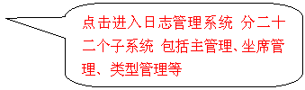
系统管理就是联络员将事件反馈给负责任。
完整的联络员事件反馈信息包括：主题、联络员、反馈内容、负责人、系统时间。
组管理就是对组的名称，状态等进行增加，修改，删除，权限等操作。

右侧显示
（图12.1.1）
点击（图12.1.1）中的授权按钮将弹出页面，如下图。

（图12.1.2）
授权按钮将为您选择的组分配模块使用权限。
点击（图12.1.1）中的修改按钮将弹出页面，如下图。
修改按钮将为您选择的组设置使用状态，正常：可以使用。冻结：不可使用。
组管理就是对坐席的名称，状态等进行增加，修改，删除，权限等操作。

右侧显示

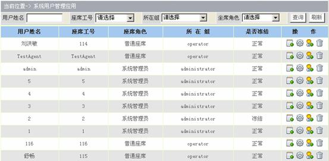
（图12.2.2）
点击（图12.2.2）中的授权按钮将弹出页面，如下图。
（图12.2.3）
点击（图12.2.3）中的授权按钮将为您选择的作坐席员分配模块使用权限。
右侧显示


（图12.3.1）
此功能可对节点进行增加，修改，删除的操作。
右侧显示
（图12.4.1）
点击（图12.4.1）中修改按钮，界面显示

此功能可为计算机添加删除和修改IP
来电屏蔽模块可以屏蔽您输入的电话号码，和取消屏蔽等操作。

右侧显示
点击查询按钮，可查询屏蔽的电话号码。
点击添加按钮，可添加您要屏蔽的电话号码。
右侧显示
（图12.3.1）
为模块排好顺序后，点击排序按钮，可保存您已排好模块的顺序
角色管理就是对角色的名称，状态等进行增加，修改，删除，权限等操作。
右侧显示
此功能可添加删除和修改角色，并为角色授予权限
授权如下图
点击授权按钮，为你选择的角色做权限的修改
右侧显示
此功能类似与新闻。
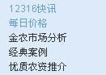
右侧显示
此功能将产品名称，产品地址，产品价格以列表形式滚动输出。

右侧显示
点击的保存按钮，可将文件保存并在图中左上角处显示。
点击的修改按钮，可修改文件。
点击历史分析文件，如下图显示。

经典案例是专家答疑实例。
右侧显示
此功能类似新闻。
右侧显示
点击的保存按钮，可将文件保存并在图中左上角处显示。
点击的修改按钮，可修改文件。
点击历史分析文件，如下图显示。
右侧显示
点击的保存按钮，可将文件保存并在图中左上角处显示。
点击的修改按钮，可修改文件。
点击历史分析文件，如下图显示。
滚动播出新闻。
右侧显示
点击的保存按钮，可将文件保存并在图中左上角处显示。
点击的修改按钮，可修改文件。
点击历史分析文件，如下图显示。
此功能滚动播出话务信息。
右侧显示
此功能以柱图形式显示每日话务咨询量。
右侧显示
此功能以柱图形式显示每月话务咨询量。
右侧显示
此功能以柱图形式显示每年话务咨询量。
右侧显示
此功能以柱图形式显示每天栏目话务咨询量。
右侧显示

此功能以柱图形式显示每月栏目话务咨询量。
右侧显示
此功能以柱图形式显示当年栏目话务咨询量。
右侧显示
此功能是对快讯信息的增加、删除、修改。
右侧显示
（图13.6.1）
点击（图13.6.1）中的查询按钮，进行查询，下方将显示查询出来的信息列表。
点击（图13.6.1）中的详细，修改，删除按钮弹出大致相同的页面；
唯一不同的是按钮的类型。例如你点击详细按钮，弹出来的页面上只有关闭按钮。点击修改按钮，弹出来的页面上会有修改和关闭两个按钮。点击删除按钮，弹出来的页面上会有删除和关闭按钮。
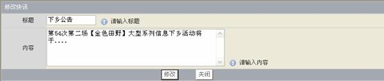
右侧显示
（图13.1.1）
点击（图13.1.1）中的查询按钮，进行查询，下方将显示查询出来的信息列表。
点击（图13.21）中的发送消息按钮弹出新页面，可发消息给其他人；
右侧显示
（图13.2.1）
点击（图13.2.1）中的查询按钮，进行查询，下方将显示查询出来的信息列表。
点击（图13.2.1）中的修改按钮弹出新页面，可对选中行的信息进行修改；
右侧显示
（图13.3.1）
点击（图13.3.1）中的查询按钮，进行查询，下方将显示查询出来的信息列表。
右侧显示
（图13.3.1）
点击（图13。3.1）中的详细按钮进行查询，将弹出新页面显示点击行的详细信息。
点击（图13。3.1）中的播放按钮可收听录音。
右侧显示
（图13.5.1）
点击（图13.5.1）中的收听按钮，可听到通话录音。
右侧显示
（图13.6.1）
点击（图13.6.1）中的查询按钮，进行查询，下方将显示查询出来的信息列表。
点击（图13.6.1）中的详细，修改，删除按钮弹出大致相同的页面；
唯一不同的是按钮的类型。例如你点击详细按钮，弹出来的页面上只有关闭按钮。点击修改按钮，弹出来的页面上会有修改和关闭两个按钮。点击删除按钮，弹出来的页面上会有删除和关闭按钮。
点击（图13.6.1）中的添加按钮，可添加一条新的服务纪录。
右侧显示

（图13.7.1）
点击（图13.7.1）中的查询按钮，进行查询，下方将显示查询出来的信息列表。
点击（图13.7.1）中的录音按钮，可收听录音。
右侧显示
（图13.8.1）
点击（图13.8.1）中的查询按钮，进行查询，下方将显示查询出来的信息列表。
进入超级管理员使用节点 C> 参数
业务操作系统C> IVR点播定制退订业务C>IVR点播定制退订业务C> IVR点播定制退订业务
对人员联系方式的增加、删除及修改。
右侧显示

（图15.1.1）
点击（图15.1.1）中的查询按钮，进行查询，下方将显示查询出来的信息列表。
点击（图2.1.3）中的详细，修改，删除按钮弹出大致相同的页面；
唯一不同的是按钮的类型。例如你点击详细按钮，弹出来的页面上只有关闭按钮。点击修改按钮，弹出来的页面上会有修改和关闭两个按钮。点击删除按钮，弹出来的页面上会有删除和关闭按钮。
点击（图15.1.1）中的添加按钮，弹出添加操作页面。

点击（图15.1.1）中的批量按钮，弹出信息添加操作页面。
右侧显示

（图15.1.2）
点击（图15.1.2）中的查询按钮，进行查询，下方将显示查询出来的信息列表。
点击（图15.1.2）中的详细，修改，删除按钮弹出大致相同的页面；
唯一不同的是按钮的类型。例如你点击详细按钮，弹出来的页面上只有关闭按钮。点击修改按钮，弹出来的页面上会有修改和关闭两个按钮。点击删除按钮，弹出来的页面上会有删除和关闭按钮。

点击（图15.1.1）中的添加按钮，弹出添加操作页面。
点击（图15.1.1）中的批量按钮，弹出信息添加操作页面。
右侧显示
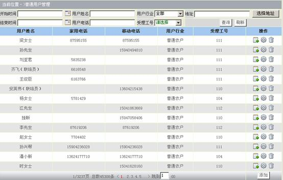
（图15.1.2）
点击（图15.1.2）中的查询按钮，进行查询，下方将显示查询出来的信息列表。
点击（图15.1.2）中的详细，修改，删除按钮弹出大致相同的页面；
唯一不同的是按钮的类型。例如你点击详细按钮，弹出来的页面上只有关闭按钮。点击修改按钮，弹出来的页面上会有修改和关闭两个按钮。点击删除按钮，弹出来的页面上会有删除和关闭按钮。
点击（图15.1.1）中的添加按钮，弹出添加操作页面。
此功能主要用于统计，修改，删除，添加报价。
联络员报价浏览就是察看联络员报价的信息。
完整的报价信息包括：联络员姓名、用户地址、用户电话、报价次数、应报价次数、系统时间。
右侧显示
联络员事件管理就是察看联络员处理事件的信息。
完整的普通案例信息包括：任务名称、任务详情、任务责任人、任务参与者、系统时间。
右侧显示

（图16.3.1）
点击（图16.3.1）中的查询按钮，进行查询，下方将显示查询出来的信息列表。
点击（图16.3.1）中的详细，修改，删除按钮弹出大致相同的页面；
唯一不同的是按钮的类型。例如你点击详细按钮，弹出来的页面上只有关闭按钮。点击修改按钮，弹出来的页面上会有修改和关闭两个按钮。点击删除按钮，弹出来的页面上会有删除和关闭按钮。
点击（图16.3.1）中的反馈按钮，弹出反馈操作页面，反馈信息给联络员。
点击（图16.3.1）中的添加按钮，弹出添加操作页面。
联络员事件反馈就是联络员将事件反馈给负责人。
完整的联络员事件反馈信息包括：主题、联络员、反馈内容、负责人、系统时间。
右侧显示

（图16.3.2）
点击（图16.3.2）中的查询按钮，进行查询，下方将显示查询出来的信息列表。
点击（图16.3.2）中的详细，修改，删除按钮弹出大致相同的页面；
唯一不同的是按钮的类型。例如你点击详细按钮，弹出来的页面上只有关闭按钮。点击修改按钮，弹出来的页面上会有修改和关闭两个按钮。点击删除按钮，弹出来的页面上会有删除和关闭按钮。